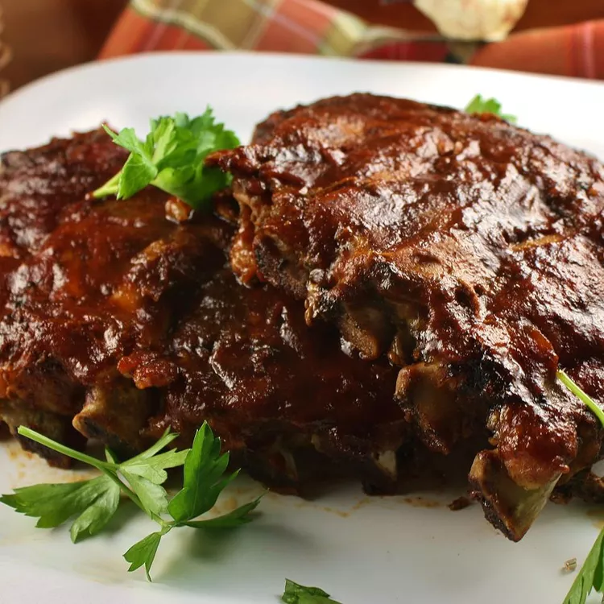

Slow Cooker Baby Back Ribs

Slow Cooker Baby Back Ribs
Baby backed ribs cooked in a slow cooker covered in barbeque sauce. This
will create tender ribs with great flavor.
Ingredients
- (18 ounce) bottle barbeque sauce
- 1 clove garlic, minced
- ½ onion, sliced
- ½ cup water
- salt and ground black pepper, to taste
- 3 pounds baby back ribs, trimmed
Directions
- Season ribs with salt and pepper.
-
Pour 1/2 cup water into the slow cooker, then add ribs. Scatter onion
and garlic over top. Cover and cook on Low for 8 hours or High for 4
hours.
-
When the ribs are almost finished, preheat the oven to 375 degrees F
(190 degrees C).
-
Transfer ribs from the slow cooker to a baking sheet; discard onion and
garlic. Coat ribs with barbeque sauce.
-
Bake ribs in the preheated oven until sauce caramelizes and sticks to
meat, 10 to 15 minutes.